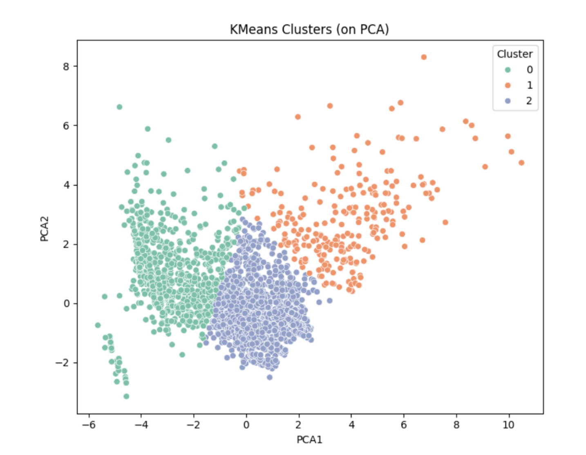
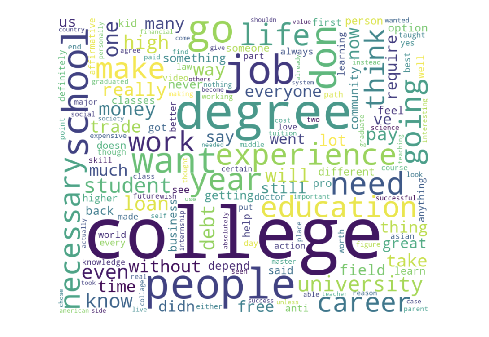

Predictive Modeling & Sentiment Analysis on Higher Education Outcomes
Project Overview
This project used real academic and sentiment data to investigate factors that influence student dropout. I applied both statistical tests and machine learning to predict academic outcomes — and added public opinion analysis using YouTube comments on college education.
🧰 Tools Used
Python, Power BI (Power Query), Pandas, Seaborn, Matplotlib
ML: KNN, Naive Bayes, K-Means Clustering, PCA
NLP: Sentiment Analysis, Topic Modeling (LDA)
🎯 Objectives
Identify key demographic, academic, and financial features linked to dropout
Use supervised models to predict dropout vs graduation
Apply clustering to uncover student profiles
Analyze public sentiment on college using real YouTube comments
📊 Visualizations
Drop your visual images in the /images folder and use this format:

Figure: Clustering Students Based on Demographics & Grades

Figure: Public Sentiment on College Education from YouTube Comments
📌 Key Findings
📈 Dropout rates were higher among older, male, and non-scholarship students
🎓 Graduates had clearly higher GPA trends and course approvals
🔍 KNN reached ~91% accuracy in predicting outcomes
📚 Sentiment analysis showed that affordability and career goals were major themes
🧠 Skills Demonstrated
Full data science pipeline: cleaning, EDA, modeling, evaluation